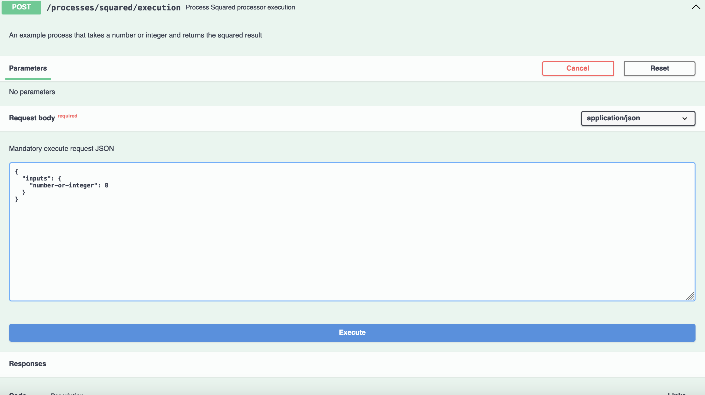

Welcome to the Diving into pygeoapi workshop!
Version: 1.6.0

pygeoapi is a Python server implementation of the OGC API suite of standards. The project emerged as part of the next generation OGC API efforts in 2018 and provides the capability for organizations to deploy a RESTful OGC API endpoint using OpenAPI, GeoJSON, and HTML. pygeoapi is open source and released under an MIT license.
Diving into pygeoapi is a half day workshop designed for users to become familiar with installing, configuring, publishing data to and extending pygeoapi. This workshop will cover publishing geospatial data to the Web using pygeoapi in support of the suite of OGC API standards.
This workshop covers a wide range of topics (install/setup/configuration, publishing, cloud, templating, plugins, etc.). Please see the left hand navigation for the table of contents.
Your FOSS4G-EU 2025 workshop team
 |
 |
 |
 |
 |
| Tom Kralidis | Just van den Broecke | Paul van Genuchten | Seth Girvin | Luís de Sousa |
About this tutorial
This tutorial is a combination of step-by-step explanations of various aspects of pygeoapi as well as a series of exercises to familiarize yourself with the project.
Exercises are indicated as follows:
Example exercise
A section marked like this indicates that you can try out the exercise.
Example exercise with tabs
A section marked like this indicates that you can try out the exercise and choose your environment (Linux/Mac or Windows).
docker run -p 5000:80 -v $(pwd)/default.config.yml:/pygeoapi/local.config.yml geopython/pygeoapi:latest
docker run -p 5000:80 -v ${pwd}/default.config.yml:/pygeoapi/local.config.yml geopython/pygeoapi:latest
Also you will notice tips and notes sections within the text:
Tip
Tips share additional help on how to best achieve tasks
Examples are indicated as follows:
Code
1 2 3 4 5 | |
Configuration
1 2 3 4 | |
Snippets which need to be typed in a on a terminal/console are indicated as:
echo 'Hello world'
Workshop location and materials
This workshop is always provided live at https://dive.pygeoapi.io.
The workshop contents, wiki and issue tracker are managed on GitHub at https://github.com/geopython/diving-into-pygeoapi.
Printing this workshop
To print this workshop, navigate to the print page and select File > Print > Save as PDF.
Support
A Gitter channel exists for discussion and live support from the developers of the workshop and other workshop participants.
For issues/bugs/suggestions or improvements/contributions, please use the GitHub issue tracker.
All bugs, enhancements and issues can be reported on GitHub.
As always, core pygeoapi support and community information can be found on the pygeoapi website.
Contributions are always enncouraged and welcome!
Now, on to the workshop. Let's go!
Introduction to pygeoapi
The development team of pygeoapi (yes, spelled in lowercase) is excited to welcome you in this workshop!
In this half day workshop, we will give you an introduction to pygeoapi, how to publish data, and provide resources and tips for future reading and reference (i.e. where to go when you don't know!).
Although pygeoapi is written in Python and can be customizable and extensible (plugins) for Python developers, Python skills are not required to install, setup and publish your geospatial data as part of this workshop. All you need for the workshop is your favorite text editor and Docker (we will more information in the setup section).
Background reading
The pygeoapi website is the main entrypoint for both end-users and developers where you can find:
- official documentation
- the default and latest presentations
- documentation and presentations archive
- code on GitHub
- Docker images available on Docker Hub
- pygeoapi releases in the Python Package Index (PyPI)
Given pygeoapi implements a number of OGC API standards, you may also want to read about these on ogcapi.ogc.org.
Existing Deployments
A number of organizations have deployed pygeoapi to their operations. To get a feel of how pygeoapi is used in practice, check out our up to date live deployments page. By default, the pygeoapi public demo at demo.pygeoapi.io is always maintained and made available by the development team. Check out the main instance which always runs the latest GitHub version.
Interested in the demo site setup itself? demo.pygeoapi.io is developed in a GitHub repository using a DevOps continuous deployment (CD) workflow. Even more recent GitOps deployments were developed for Geonovum and the European Commission Joint Research Center.
The above examples may help as starting points for your own pygeoapi setup and deployment, so feel free to study and use them!
History
Starting in 2018, pygeoapi emerged as part of the initial efforts for the development of OGC API standards. OGC API code sprints were instrumental for agile development and pouring the foundation of the project.
The core design principles are as follows:
- simplicity / low barrier to entry
- long term sustainability
- modularity
- extensibility
- building on a large ecosystem of Free Open Source and OSGeo components such as GDAL, rasterio, Shapely, Pandas, Elasticsearch, PostGIS and many others
The project was initiated by Tom Kralidis. Within weeks, several talented developers joined the project, which led to the formation of a core team and Project Steering Committee (PSC). Contributions continued as well from additional developers and users who happily provided new functionality, bug fixes, and documentation updates. As a result, a healthy community quickly emerged with a common interest in open source, OGC API standards, low barrier, modular and extensible. The rest, as they say, is history.
pygeoapi is an OSGeo Project and an OGC Reference Implementation.
Workshop environment setup
In this workshop we use the following materials:
- Documentation - (like this page): access latest on dive.pygeoapi.io
- Exercises - download the latest zip file, unzip, find exercises in
workshop/exercises2 - Docker - all examples/exercises are run in a
Docker containerinworkshop/exercises
Text editor
Your text editor needs to be able to edit configuration files in plain text. Below are some choices for text editors (there may be others), along with what some of the pygeoapi developers prefer to use:
- Notepad or Notepad++ (Windows)
- Sublime Text: Angelos
- PyCharm: Just
- Emacs: Just
- Visual Studio Code: Francesco, Angelos, Joana
vi/vim: Tom, Angelos
Having said this, please feel free to use what works for you :)
YAML
Most exercises will focus on editing the pygeoapi configuration, which is in the YAML format. If you are not familiar with YAML, it is worth reading through a tutorial to become aware of YAML syntax and indentation.
The main requirement for the training is to install Docker and/with Docker Compose on your system. We strongly advise to install Docker before the workshop starts.
Although several custom installation scenarios are possible (see the documentation for more information), these are not considered in this workshop given the ability to install a fully reproducible environment via Docker and Docker Compose.
Workshop Exercises will also be based on Docker, hence a custom installation would at least be 'challenging'. The good news is that only a single installation (Docker) is needed! The Docker images used in this workshop contain the latest pygeoapi and all its dependencies and external services (e.g. PostGIS).
About Docker
Docker has been available since 2013, and provided as a deployment option on numerous FOSS software and OSGeo projects. Given the current era of computing, chances are that you have heard of Docker and containerization. Or, perhaps are already familiar and hopefully using Docker already. If not, there is an abundance of introductory materials that can be found online like this tutorial from IBM.
FOSS4G software has benefitted greatly from Docker (consistent packaging, isolation, integration and upgrade patterns) in comparison to custom installations. Though today we mainly use Docker, the bigger picture is the use of Containers as a next step in virtualization. Containerization certainly deserves its own workshop, so for the purpose of this workshop we only cover the basics of Docker and Docker Compose.
Docker Compose is an addition to Docker to facilitate
the orchestration (configuration) of one or more Docker 'Containers' (a Container is a running instance of a Docker image)
using a configuration convention (the Docker Compose YAML file), usually named docker-compose.yml.
Stepping up further are even more sophisticated Docker orchestrators like Rancher and Kubernetes, but for this workshop, Docker and Docker Compose are all we need.
Installation
Docker installation has greatly progressed over the years. This is the only part of the workshop which is dependent on the system/OS you are running (e.g. Windows, Mac or Linux). For each system the Docker website provides detailed installation instructions. Please follow these consistently.
For many platforms a product called Docker Desktop is available, which includes the main Docker components:
- Windows installation
- Mac installation
- Linux installation
Some notes:
- On Windows we recommend using the Windows Subsystem for Linux (WSL) as it also provides a powerful (Bash) command line and has optimal integration with Docker. Before installing Docker Desktop, install WSL by opening Microsoft PowerShell (run as administrator) and running
wsl --install- installing WSL requires administrator privileges on your system
- On Mac, if you are using Homebrew, consider (as the author has) using the brew Docker formula
- On Mac OSX Monterey and later, there may be an issue with local port 5000 already in use, therefore conflicting with the default one used by the pygeoapi container. If you see this error
OSError: [Errno 48] Address already in use, you need to disable the Airplay Receiver. Go toSystem Settings | Sharingor like in Sonoma type 'airplay' in the search box. See image below for Mac OSX Sonoma. Also a detailed description in this blog post.
- On Linux, you can choose the relevant installer for your platform. You can also use Virtualbox with a Ubuntu Image or use a cloud VM
- On Linux, when encountering permission issues: the Docker daemon normally runs as "root". This requires prefixing commands with
sudoas a non-root user. On most distributions Docker is accessible by users in thedockergroup. You can omit the use ofsudoand prevent possibly other permission issues as follows:- Test if the
dockergroup exists:cat /etc/group | grep docker. - When non-existing:
sudo groupadd docker. - Add your user to this group:
sudo usermod -aG docker $USER - Log-out and log-in.
- See all details and more options in this instruction.
- Test if the
- Docker Desktop includes a graphical user interface with some interesting options. You can see logs and information about running containers, open their service in a browser or even open a terminal inside the container
If all goes well, you should be able to run Docker from the command line as follows: 1
docker version
Docker version 20.10.17, build 100c701
docker compose version
Docker Compose version v2.6.1
docker version
Docker version 20.10.17, build 100c701
docker compose version
Docker Compose version v2.6.1
(It is not required that your version numbers exactly match).
Quickstart
Once Docker is available on your system, running the pygeoapi container with its built-in configuration and data is a one-liner.
Open a terminal session and run:
First run via Docker
docker run --rm -p 5000:80 geopython/pygeoapi:latest
Unable to find image 'geopython/pygeoapi:latest' locally
latest: Pulling from geopython/pygeoapi
d7bfe07ed847: Already exists
d5d0144a7164: Already exists
afe0923a0fa0: Already exists
75f8618c4e86: Already exists
c603397fd6ad: Already exists
6584a95328b3: Already exists
fd93e44631d9: Already exists
6a3201071a5d: Already exists
4f4fb700ef54: Already exists
Digest: sha256:27b2b219497a6ea382a946ee90ae96ad00b5c1d8e9b725fccf23211978fef124
Status: Downloaded newer image for geopython/pygeoapi:latest
START /entrypoint.sh
Trying to generate openapi.yml
openapi.yml generated continue to pygeoapi
make SCRIPT_NAME empty from /
Start gunicorn name=pygeoapi on 0.0.0.0:80 with 4 workers and SCRIPT_NAME=
[2022-08-09 12:59:00 +0000] [1] [INFO] Starting gunicorn 20.0.4
[2022-08-09 12:59:00 +0000] [1] [INFO] Listening at: http://0.0.0.0:80 (1)
[2022-08-09 12:59:00 +0000] [1] [INFO] Using worker: gevent
[2022-08-09 12:59:00 +0000] [18] [INFO] Booting worker with pid: 18
[2022-08-09 12:59:00 +0000] [19] [INFO] Booting worker with pid: 19
[2022-08-09 12:59:00 +0000] [21] [INFO] Booting worker with pid: 21
[2022-08-09 12:59:00 +0000] [22] [INFO] Booting worker with pid: 22
docker run --rm -p 5000:80 geopython/pygeoapi:latest
Unable to find image 'geopython/pygeoapi:latest' locally
latest: Pulling from geopython/pygeoapi
d7bfe07ed847: Already exists
d5d0144a7164: Already exists
afe0923a0fa0: Already exists
75f8618c4e86: Already exists
c603397fd6ad: Already exists
6584a95328b3: Already exists
fd93e44631d9: Already exists
6a3201071a5d: Already exists
4f4fb700ef54: Already exists
Digest: sha256:27b2b219497a6ea382a946ee90ae96ad00b5c1d8e9b725fccf23211978fef124
Status: Downloaded newer image for geopython/pygeoapi:latest
START /entrypoint.sh
Trying to generate openapi.yml
openapi.yml generated continue to pygeoapi
make SCRIPT_NAME empty from /
Start gunicorn name=pygeoapi on 0.0.0.0:80 with 4 workers and SCRIPT_NAME=
[2022-08-09 12:59:00 +0000] [1] [INFO] Starting gunicorn 20.0.4
[2022-08-09 12:59:00 +0000] [1] [INFO] Listening at: http://0.0.0.0:80 (1)
[2022-08-09 12:59:00 +0000] [1] [INFO] Using worker: gevent
[2022-08-09 12:59:00 +0000] [18] [INFO] Booting worker with pid: 18
[2022-08-09 12:59:00 +0000] [19] [INFO] Booting worker with pid: 19
[2022-08-09 12:59:00 +0000] [21] [INFO] Booting worker with pid: 21
[2022-08-09 12:59:00 +0000] [22] [INFO] Booting worker with pid: 22
That's all! Open your browser and navigate to http://localhost:5000, the pygeoapi page will display.
As part of the initial docker run, Docker will download the pygeoapi Docker Image from Docker Hub.
This may take some time, as the Docker image includes all dependencies (such as GDAL, etc.). Be patient! This is a one-time download for the entire workshop, or
you may want to do this beforehand.
Some notes:
- Docker runs a pygeoapi container on your local system on port 5000, which is mapped to port 80 inside the container
- the pygeoapi Docker container runs with the default configuration and data from the GitHub repo
- both configuration and data (from GitHub repo) is embedded in the Docker Image - we will override these later
- the
--rmoption removes the Docker Container (but not the image), after execution - type
CTRL-Cto stop the container and return to the terminal
Next, you can override the default configuration and add your own data using Docker volumes.
Customizing configuration
In the upcoming exercises we are going to update the configuration file multiple times.
For ease of development we are overriding the pygeoapi configuration which resides by default at /pygeoapi/local.config.yml
within the container by a local file which you can edit in your favourite text editor.
Override the pygeoapi config file
Download pygeoapi's default Docker configuration from default.config.yml to the current folder (or navigate to the folder where you downloaded the file), for example with:
curl -O https://raw.githubusercontent.com/geopython/pygeoapi/master/docker/default.config.yml
curl https://raw.githubusercontent.com/geopython/pygeoapi/master/docker/default.config.yml
Open the file in your favourite text editor and change the title and description of the API:
59 60 61 62 | |
Now run the container with the overridden config file:
docker run -p 5000:80 \
-v $(pwd)/default.config.yml:/pygeoapi/local.config.yml \
geopython/pygeoapi:latest
docker run -p 5000:80 -v ${pwd}/default.config.yml:/pygeoapi/local.config.yml geopython/pygeoapi:latest
At this point, navigate to http://localhost:5000 to verify the new title and description.
Note
On Windows, the file downloaded may be renamed to default.config.yml.txt. Ensure to rename the file to default.config.yml.
By using a Docker volume mount (-v option), Docker attaches or 'mounts' a
directory or single file from your host/local system into the Docker Container.
In the above snippet, $(pwd) indicates the working folder from which you start the Docker container.
Adding data and setting the configuration file
In addition to adapting the configuration you will usually add your own data as files or remote data services like PostGIS or WFS.
You can also mount a local directory such as data/ to /pygeoapi/mydata within the Container.
Within the data directory you can store vector data, raster files or sets of image of vector tiles.
Below is an example where the configuration is explicitly set to pygeoapi-config.yml via an environment variable (-e) and uses a Docker mount to mount the local data folder as /pygeoapi/mydata:
docker run -p 5000:80 \
-v $(pwd)/data:/pygeoapi/mydata \
-v $(pwd)/default.config.yml:/pygeoapi/pygeoapi-config.yml \
-e PYGEOAPI_CONFIG=/pygeoapi/pygeoapi-config.yml \
geopython/pygeoapi:latest
docker run -p 5000:80 -v ${pwd}/data:/pygeoapi/mydata -v ${pwd}/default.config.yml:/pygeoapi/pygeoapi-config.yml -e PYGEOAPI_CONFIG=/pygeoapi/pygeoapi-config.yml geopython/pygeoapi:latest
In the next sections we will review additional examples of mounts to the data folder. More Docker deployment examples can be found in the pygeoapi GitHub repository.
Using Docker for Python Clients
In some exercises we access pygeoapi remote endpoints using OWSLib,
a Python library to interact with OGC Web Services. OWSLib can be installed using standard
Python pip3 install OWSLib, but you may not have Python available, or you want to keep your system 'clean'.
As Docker is already available on your system, you can start up a
Container with a complete Python environment, and access it from a bash shell prompt.
The magic line is:
docker run -it --rm --network=host --name owslib python:3.10-slim /bin/bash
This will pull a small (125MB) official Python Docker Image. When the Container is started, you are directed into
a bash session/prompt. The argument --network=host allows you to directly interact with services on your
host system, thus with pygeoapi, without setting up a Docker network. From there you can start python3, install OWSLib and
maybe even other tools like curl and wget.
Below is a complete example, assuming pygeoapi runs on your localhost at port 5000:
docker run -it --rm --network=host --name owslib python:3.10-slim /bin/bash
Unable to find image 'python:3.10-slim' locally
3.10-slim: Pulling from library/python
5b5fe70539cd: Pull complete
f4b0e4004dc0: Pull complete
c5424f0ac885: Pull complete
9d21fe1624ec: Pull complete
de0194aa1c21: Pull complete
Digest: sha256:7dc5b4e948acd18c1633b0e593ad0224298646612ce7d0b5ac6d4e17616d7e4b
Status: Downloaded newer image for python:3.10-slim
root@docker-desktop:/# pip3 install owslib
root@docker-desktop:/# python3
>>> from owslib.ogcapi.features import Features
>>> w = Features('http://localhost:5000')
>>> w
<owslib.ogcapi.features.Features object at 0x7ff493e6f850>
>>> conformance = w.conformance()
>>> conformance
etc
docker run -it --rm --network=host --name owslib python:3.10-slim /bin/bash
Unable to find image 'python:3.10-slim' locally
3.10-slim: Pulling from library/python
5b5fe70539cd: Pull complete
f4b0e4004dc0: Pull complete
c5424f0ac885: Pull complete
9d21fe1624ec: Pull complete
de0194aa1c21: Pull complete
Digest: sha256:7dc5b4e948acd18c1633b0e593ad0224298646612ce7d0b5ac6d4e17616d7e4b
Status: Downloaded newer image for python:3.10-slim
root@docker-desktop:/# pip3 install owslib
root@docker-desktop:/# python3
>>> from owslib.ogcapi.features import Features
>>> w = Features('http://localhost:5000')
>>> w
<owslib.ogcapi.features.Features object at 0x7ff493e6f850>
>>> conformance = w.conformance()
>>> conformance
etc
We will refer to this installation in some of the Exercises where OWSLib is used.
-
For recent version of Docker run
docker compose version↩ -
Alternatively, you can fork/clone the GitHub repository of this workshop directly from https://github.com/geopython/diving-into-pygeoapi. ↩
Overview
This section provides a high level overview of standards support in pygeoapi.
Standards
Open standards are core to pygeoapi, and allow for broad interoperability and plug and play capability. pygeoapi supports a number of open standards (both formal standards and defacto or community driven).
API standards
OGC API
pygeoapi implements the OGC API suite of standards from the Open Geospatial Consortium (OGC). From the OGC API website:
Citation
The OGC API family of standards are being developed to make it easy for anyone to provide geospatial data to the web. These standards build upon the legacy of the OGC Web Service standards (WMS, WFS, WCS, WPS, etc.), but define resource-centric APIs that take advantage of modern web development practices. This web page provides information on these standards in a consolidated location.
These standards are being constructed as "building blocks" that can be used to assemble novel APIs for web access to geospatial content. The building blocks are defined not only by the requirements of the specific standards, but also through interoperability prototyping and testing in OGC's Innovation Program.
Tip
You can learn more about OGC APIs in the OGC API workshop
OGC API - Common
OGC API - Common is a common framework used in all OGC API's. OGC API - Common provides the following functionality:
- based on OpenAPI 3.0
- HTML and JSON as the dominant encodings, alternative encodings are possible
- shared endpoints such as:
/(landing page)/conformance/openapi/collections/collections/foo
- aspects such as pagination, links between resources, basic filtering, query parameters (
bbox,datetime, etc.) - shared models (exceptions, links, etc.)
OGC API - Common allows for specification developers to focus on the key functionality of a given API (i.e. data access, etc.) while using common constructs. This harmonizes OGC API standards and enables deeper integration with less code. This also allows for OGC API client software to be more streamlined.
The /conformance endpoint indicates which standards and extensions are supported by a deployment of OGC API.
OGC API building blocks
The OGC API approach allows for modularity and "profiling" of APIs depending on your requirements. This means you can mix and match OGC APIs together.

You can read more about this topic in the building blocks website.
More OGC APIs
The OGC API effort is rapidly evolving. Numerous OGC API standards are in development, and will be implemented in pygeoapi over time:
- Routes provides access to routing data
- Styles defines a Web API that enables map servers, clients as well as visual style editors, to manage and fetch styles
- 3D GeoVolumes facilitates efficient discovery of and access to 3D content in multiple formats based on a space-centric perspective
- Moving Features defines an API that provides access to data representing features that move as rigid bodies
- Joins supports the joining of data, from multiple sources, with feature collections or directly with other input files
- Discrete Global Grid System enables applications to organise and access data arranged according to a Discrete Global Grid System (DGGS)
OGC APIs supported by pygeoapi
pygeoapi implements numerous OGC API standards and draft standards. In addition, it is compliance certified and even a Reference Implementation (RI) for some of them. Compliance certification is important to remove interoperability risks. RI are always compliance certified. From OGC Compliance Testing Program Policies & Procedures 08-134r11:
Citation
Candidate Products that pass all the tests in a Compliance Test Package, and that OGC has reviewed and certified as having passed those tests, are considered compliant with that Implementation Standard version.
Citation
A Reference Implementation is a fully functional, licensed copy of a tested, branded software that has passes the test for an associated conformance class in a version of an Implementation Standard and that is free and publicly available for testing via a web service or download.
| Standard | pygeoapi status | Included in this workshop |
|---|---|---|
| OGC API - Features | Reference | ✅ |
| OGC API - Coverages | Implementing | ✅ |
| OGC API - Tiles | Reference | ✅ |
| OGC API - Maps | Implementing | ✅ |
| OGC API - Processes | Certified | ✅ |
| OGC API - Records | Implementing | ✅ |
| OGC API - Environmental Data Retrieval | Reference | ✅ |
| SpatioTemporal Asset Catalog | Implementing | |
| OGC API - Routes | Planned | |
| OGC API - Styles | Planned | |
| OGC API - Moving Features | Planned | |
| OGC API - DGGS | Planned |
In the next section we will dive into the dedicated API's related to specific types of information. You will notice that all APIs are combined and available via a single OGC API endpoint, thanks to OGC API - Common.
OpenAPI
Core to OGC API - Common is the OpenAPI initiative to help
describe and document an API. OpenAPI defines its structure in an OpenAPI document.
OGC API - Common suggests this document to be located at /openapi. With pygeoapi in a browser
this URL opens an interactive HTML page which facilitates
an API query. Append ?f=json to view the document in JSON. The OpenAPI document indicates which
endpoints are available in the service, which parameters it accepts and
what types of responses can be expected. The OpenAPI document is a similar concept to Capabilities
XML as part of the first genration OGC Web Service standards.
OpenAPI Specification parsing in a browser
A common approach to interact with Open API's using json is to use a program like Postman. Also there are browser plugins which enable to define api requests interactively within a browser. For firefox download the plugin poster. For Chrome and Edge use Boomerang. In Boomerang you can create individual web requests, but also load the open api specification document and interact with any of the advertised endpoints.
The OpenAPI community provides various tools, such as a validator for OAS documents or generate code as a starting point for client development.
Content and format standards
JSON is core in pygeoapi, providing a format that is machine readable and easy to parse and handle by client software and tools. OGC API - Common provides uniform JSON formats for the various endpoints it supports. Specific OGC API standards may specify domain specific formats (for example, GeoJSON for OGC API - Features, GeoTIFF for OGC API - Coverages) depending on the data type(s).
pygeoapi specific conventions
pygeoapi provides some conventions that are not put forth by OGC API standards, however facilitate some features and capabilities.
the f parameter
The f parameter can be used with any pygeoapi endpoint to specify an output format for a given
API request. Examples are f=html, f=json, etc.
Using a web browser to access OGC API
Use your web browser to navigate to demo.pygeoapi.io. A browser by default opens
any OGC API in HTML (as a webpage) due to the HTTP Accept header
sent by the browser (text/html). On the right top corner you will notice a JSON link. The link
adds the parameter to the url: f=json, which is a mechanism of pygeoapi to override the HTTP Accept
header sent by the web browser.
Note
When calling an OGC API from javascript, and the aim is to receive JSON, you can use the ?f=json pygeoapi convention, or the content
negotiation as provided by the standard; include an HTTP header Accept: "application/json" in your request.
In jQuery for example, this is represented by the dataType property:
1 2 3 4 5 | |
Or using the native fetch API:
1 2 3 4 5 6 | |
the skipGeometry parameter
The skipGeometry (true|false, default is false) parameter can be used with feature data access to facilitate
downloading vector data without geometry if desired.
Summary
Standards are a cornerstone of pygeoapi, and will enable you to publish your data efficiently and with a low barrier for users. Now, let's get to the action: Publishing data!
Publishing
Publishing Data
Note
Ensure that you have pygeoapi setup and can navigate the default configuration and service running at http://localhost:5000.
In this section, you will learn how to publish different types of geospatial data and metadata through the following exercises:
- Exercise 1 - Your first dataset
- Exercise 2 - Vector data via OGC API - Features
- Exercise 3 - Raster data via OGC API - Coverages
- Exercise 4 - Maps of geospatial data via OGC API - Maps
- Exercise 5 - Tiles of geospatial data via OGC API - Tiles
- Exercise 6 - Metadata via OGC API - Records
- Exercise 7 - Environmental data via OGC API - Environmental Data Retrieval
- Exercise 8 - Functions via OGC API - Processes
- Exercise 9 - pygeoapi as a bridge to other services
Exercise 1 - Your first dataset
In this section you are going to publish a vector dataset.
For this exercise, we will use a CSV dataset of Bathing waters in Estonia, kindly provided by Estonian Health Board.
You can find this dataset in workshop/exercises/data/tartu/bathingwater-estonia.csv.
This exercise consists of adjusting workshop/exercises/pygeoapi.config.yml to define this dataset as an OGC API - Features collection
Verify the existing Docker Compose config
Before making any changes, we will make sure that the initial Docker Compose setup provided to you is actually working.
To test:
Test the workshop configuration
- In a terminal shell navigate to the workshop folder and type:
cd workshop/exercises
docker compose up
cd workshop/exercises
docker compose up
- Open http://localhost:5000 in your browser, verify some collections
- Close by typing
CTRL-C
Note
You may also run the Docker container in the background (detached) as follows:
docker compose up -d
docker ps # verify that the pygeoapi container is running
# visit http://localhost:5000 in your browser, verify some collections
docker logs --follow pygeoapi # view logs
docker compose down --remove-orphans
docker compose up -d
docker ps # verify that the pygeoapi container is running
# visit http://localhost:5000 in your browser, verify some collections
docker logs --follow pygeoapi # view logs
docker compose down --remove-orphans
Publish first dataset
You are now ready to publish your first dataset.
Setting up the pygeoapi config file
- Open the file
workshop/exercises/pygeoapi/pygeoapi.config.ymlin your text editor - Look for the commented config section starting with
# START - EXERCISE 1 - Your First Collection - Uncomment all lines until
# END - EXERCISE 1 - Your First Collection
Make sure that the indentation aligns (hint: directly under # START ...)
The config section reads:
185 186 187 188 189 190 191 192 193 194 195 196 197 198 199 200 201 202 203 204 205 206 207 208 209 210 211 | |
The most relevant part is the providers section. Here, we define a CSV Provider,
pointing the file path to the /data directory we will mount (see next) from the local
directory into the Docker container above. Because a CSV is not a spatial file, we explicitly
configure pygeoapi so that the longitude and latitude (x and y) is mapped from the columns lon
and lat in the CSV file. Notice the storage_crs parameter, which indicates the coordinate system which is used in the source data.
Tip
To learn more about the pygeoapi configuration syntax and conventions see the relevant chapter in the documentation.
Tip
pygeoapi includes numerous data providers which enable access to a variety of data formats. Via the OGR/GDAL plugin the number of supported formats is almost limitless. Consult the data provider page how you can set up a connection to your dataset of choice. You can always copy a relevant example configuration and place it in the datasets section of the pygeoapi configuration file for your future project.
Test
Start with updated configuration
- Start by typing
docker compose up - Observe logging output
- If no errors: open http://localhost:5000
- Look for the Point of interest collection
- Browse through the items of the collection
- Check the json representation by adding ?f=json to url (or click 'json' in top right)
Debugging configuration errors
Incidentally you may run into errors, briefly discussed here:
- A file cannot be found, a typo in the configuration
- The format or structure of the spatial file is not fully supported
- The port (5000) is already taken. Is a previous pygeoapi still running? If you change the port, consider that you also have to update the pygeoapi config file
There are two parameters in the configuration file which help to address these issues.
Set the logging level to DEBUG and indicate a path to a log file.
Tip
On Docker, set the path of the logfile to the mounted folder, so you can easily access it from your host system. You can also view the console logs from your Docker container as follows:
docker logs --follow pygeoapi
docker logs --follow pygeoapi
Tip
Errors related to file paths typically happen on initial setup. However, they may also happen at unexpected moments, resulting in a broken service. Products such as GeoHealthCheck aim to monitor, detect and notify service health and availability. The OGC API - Features tests in GeoHealthCheck poll the availability of the service at intervals. Consult the GeoHealthCheck documentation for more information.
Exercise 2 - Vector data via OGC API - Features
OGC API - Features provides a Web API to access vector data (geometries and their attributes). While the core specification covers basic data access and query, additional related standards and extensions are in development for the following capabilities:
- OGC API - Features - Part 1: Core provides basic access and query capabilities
- OGC API - Features - Part 2: Coordinate Reference Systems by Reference enables the import and export of any data according to dedicated projections
- OGC API - Features - Part 3: Filtering adds the ability for complex queries using Common Query Language (CQL2)
- OGC API - Features - Part 4: Create, Replace, Update and Delete (draft) adds transactional capabilities
pygeoapi support
pygeoapi supports all of the above OGC API - Features specification parts (Part 3 is dependent on backend support i.e. Elasticsearch).
Note
See the official documentation for more information on supported vector backends
Note
See the official documentation for more information on CQL support
Next, we are going to explore how-to publish vector data using a GeoPackage.
Publish a GeoPackage
In the previous section we demonstrated the steps involved to add a dataset to pygeoapi and update the configuration. In this exercise we are going to publish another vector file, this time from a GeoPackage (SQLite3) vector data source.
Tip
It may be helpful to open the dataset in QGIS while adding and updating your pygeoapi server to easily evaluate table attributes, names, spatial properties and CRS.
Let's add the file workshop/exercises/data/brazil/guama_river.gpkg.zip:
Update the pygeoapi configuration
First, let's unzip the file guama_river.gpkg.zip to guama_river.gpkg.
Then, open the pygeoapi configuration file in a text editor.
Find the line # START - EXERCISE 2 - flowlines Guama River.
Add a new dataset section by uncommenting the lines up to # END - EXERCISE 2 - flowlines Guama River:
1 2 3 4 5 6 7 8 9 10 11 12 13 14 15 16 17 18 19 20 21 22 23 | |
Save the file and restart Docker Compose. Navigate to http://localhost:5000/collections to evaluate whether the new dataset with title "Guama River" has been published.
Note
The SQLite driver incidentally has challenges to open the GeoPackage extension on MacOS. Consult the official documentation or try with an alternative data format. If you use Docker this is not an issue.
OPTIONAL: Publish a GeoJSON file using Elasticsearch
This exercise is optional, if time permits, or you can perform this after workshop.
Here we explore publishing OGC API - Features data using pygeoapi with an Elasticsearch backend provider. For this we need the pygeoapi-examples GitHub repository:
git clone https://github.com/geopython/pygeoapi-examples.git
git clone https://github.com/geopython/pygeoapi-examples.git
Alternatively, you can download the repo as a .zip file and unzip.
Change into the docker/elastic folder and run the docker-compose.yml file:
cd docker/elastic
docker compose up
cd docker/elastic
docker compose up
If you experience startup problems, consult the README file. You may need to adapt your local host system's virtual memory setting.
First we will load greater_hyderabad_municipal_corporation_ward_Boundaries.geojson into the Elasticsearch server.
Edit the add-data.sh script within the ES folder, adding these two lines before the end:
1 2 | |
greater_hyderabad_municipal_corporation_ward_Boundaries.geojson is downloaded inside the Elasticsearch Docker container and then loaded into Elasticsearch.
After this we need to rebuild the Docker image:
docker compose build
docker compose build
Next we need to configure pygeoapi by inserting the snippet below into the pygeoapi config file pygeoapi/docker.config.yml.
This effectively enables publishing the file greater_hyderabad_municipal_corporation_ward_boundaries.geojson as OGC API - Features
using the Elasticsearch backend provider.
1 2 3 4 5 6 7 8 9 10 11 12 13 14 15 16 17 18 19 20 21 22 23 24 25 26 27 | |
On startup (e.g.: docker compose up -d) the pygeaoapi container will wait until the data has been ingested and the Elasticsearch index has been built. You can check the logs using:
docker compose logs --follow
docker compose logs --follow
After the server has started you can access the collection page here:
http://localhost:5000/collections/hyderabad
And the feature items here:
http://localhost:5000/collections/hyderabad/items

OPTIONAL: pygeoapi as a WFS proxy
pygeoapi can also function as an OGC API - Features frontend service for an existing OGC WFS through the built-in GDAL/OGR provider. This bridging-function effectively allows you to publish a WFS as OGC API - Features.
This is expanded in an advanced section of this workshop: pygeoapi as a Bridge to other Services WFS-section.
Client access
QGIS
QGIS is one of the first GIS Desktop clients which added support for OGC API - Features. Support has been integrated into the existing WFS provider.
Open an OGC API - Features collection in QGIS
Follow the steps to add some collections from an OGC API - Features enpoint:
- Open QGIS (if you don't have QGIS, you can use OSGeoLive)
- From the Layer menu, select
Add Layer>Add WFS layer - From the
Data source managerpanel, choose 'New connection'

- Add the URL https://demo.pygeoapi.io/master (or the address of a local server)
- You can now click the
detectbutton and QGIS will notice you are configuring an OGC API - Features endpoint - QGIS facilitates to set page size (request is split in multiple requests)
- for points you can easily set it to 2500
- for some polygons with high density, 100 can already be slow
- Press
OKto save the connection and return to the previous screen - Now click the
Connectbutton to retireve the collections of the service

- You can now add collections to your QGIS project
- You can also build a query to add a subset of the collection
- Close the
Data source manager. Notice that QGIS applied a default styling just like it would if you add a file based layer. You can work with the collection in a similar way; identify, apply styling, filter, export, etc.
Tip
Activate the Debugging/Development Tools Panel (right click anywhere on the toolbar icons and select). It will display HTTP traffic within QGIS and is a valuable tool in debugging failing connections.
Note
An increasing number of GIS Desktop clients add support for OGC API's in subsequent releases. For example ArcGIS Pro supports OGC API - Features since release 2.8.
GDAL/OGR - Advanced
GDAL/OGR provides support for OGC API - Features. This means you can use ogrinfo, ogr2ogr to query and convert data from OGC API - Features endpoints just like any other vector data source. This also means you can make connections to OGC API - Features endpoints from any software which has an interface to GDAL, such as MapServer, GeoServer, Manifold, FME, ArcGIS, etc.
Use OGR to interact with OGC API - Features
- Verify you have a recent GDAL installed, else use GDAL from OSGeoLive
- Run
ogrinfoon the command line to verify a connection to OGC API - Features
ogrinfo OAPIF:https://demo.pygeoapi.io/master/collections/obs
ogrinfo OAPIF:https://demo.pygeoapi.io/master/collections/obs
Check summary information about the layer with:
ogrinfo OAPIF:https://demo.pygeoapi.io/master/collections/obs obs -so
ogrinfo OAPIF:https://demo.pygeoapi.io/master/collections/obs obs -so
Now, let's convert the observations into a shapefile
ogr2ogr -f "ESRI Shapefile" obs.shp OAPIF:https://demo.pygeoapi.io/master/collections/obs
ogr2ogr -f "ESRI Shapefile" obs.shp OAPIF:https://demo.pygeoapi.io/master/collections/obs
Note
You can even use OGR to append new features to an OGC API - Features collection which supports transactions. Read more here about support for transactions in pygeoapi.
Use GDAL from the commandline with Docker
If you do not have GDAL installed, or want to use/try another version, you can always run the GDAL Docker image directly from the commandline. OSGeo provides GDAL Docker Images. The main thing to deal with is proper Docker Volume mapping to have GDAL tools access local files. This can be very handy for quick data conversions. Most images also come with GDAL Python bindings.
First you can pull a very small Docker Image:
docker pull ghcr.io/osgeo/gdal:alpine-small-latest
docker pull ghcr.io/osgeo/gdal:alpine-small-latest
Then you can run for example OGR command line tools. Base command is docker run -it --rm ghcr.io/osgeo/gdal:alpine-small-latest.
This runs the Docker container interactively (-it) and removes the container on exit (--rm). Below are examples.
Ask GDAL/OGR for available Vector formats:
docker run -it --rm ghcr.io/osgeo/gdal:alpine-small-latest \
ogrinfo --formats
docker run -it --rm ghcr.io/osgeo/gdal:alpine-small-latest ogrinfo --formats
Get information from a geospatial file. Note the volume mapping: -v $(pwd)/data:/work
to access local files within the Docker container (commands are single-line, broken up for readability).
cd git/workshop/exercises
docker run -v $(pwd)/data:/work -it --rm \
ghcr.io/osgeo/gdal:alpine-small-latest \
ogrinfo /work/tartu/bathingwater-estonia.geojson
INFO: Open of `/work/tartu/bathingwater-estonia.geojson'
using driver `GeoJSON' successful.
1: bathingwater-estonia (Point)
cd git/workshop/exercises
docker run -v ${pwd}/data:/work -it --rm ghcr.io/osgeo/gdal:alpine-small-latest ogrinfo /work/tartu/bathingwater-estonia.geojson
INFO: Open of `/work/tartu/bathingwater-estonia.geojson'
using driver `GeoJSON' successful.
1: bathingwater-estonia (Point)
Convert the GeoJSON file to a GeoPackage (GPKG) with ogr2ogr:
docker run -v $(pwd)/data:/work -it --rm \
ghcr.io/osgeo/gdal:alpine-small-latest \
ogr2ogr -f "GPKG" /work/tartu/bathingwater-estonia.gpkg \
/work/tartu/bathingwater-estonia.geojson
bash
docker run -v ${pwd}/data:/work -it --rm ghcr.io/osgeo/gdal:alpine-small-latest ogr2ogr -f "GPKG" /work/tartu/bathingwater-estonia.gpkg /work/tartu/bathingwater-estonia.geojson
You can also use ogrinfo retrieve information about an OGC API - Features collection. In case you are accessing a local collection, you will need to make sure the container runs on the host network:
docker run \
--network=host \
ghcr.io/osgeo/gdal:alpine-small-latest \
ogrinfo OAPIF:http://localhost:5000/collections/obs obs -so
docker run --network=host ghcr.io/osgeo/gdal:alpine-small-latest ogrinfo OAPIF:http://localhost:5000/collections/obs obs -so
OWSLib - Advanced
OWSLib is a Python library to interact with OGC Web Services and supports a number of OGC APIs including OGC API - Features.
This exercise will be done using a jupyter notebook. If you prefer, you can do it using Python from the command line (see bellow).
Before continuing, make sure you are in the workshop/exercises folder. You will need that, to be able to use the jupyter notebook.
pwd
cd
Then run a container to start a jupyter notebook, mounting the local folder:
docker run -p 8888:8888 -v $(pwd):/home/jovyan/work jupyter/base-notebook
docker run -p 8888:8888 -v ${pwd}:/home/jovyan/work jupyter/base-notebook
Enter the url stated on the command line, http://127.0.0.1:8888/lab followed by a token. Enter the work folder and open the features-owslib.ipynb.

Run through the notebook, to explore an OGC API - Features server, using owslib.
Note
You can run the same instructions using your local pygeoapi server, instead of the demo pygeoapi instance.
Using Python from the command line
Interact with OGC API - Features via OWSLib
If you do not have Python installed, consider running this exercise in a Docker container. See the Setup Chapter.
pip3 install owslib
pip3 install owslib
Then start a Python console session with python3 (stop the session by typing exit()).
>>> from owslib.ogcapi.features import Features
>>> w = Features('https://demo.pygeoapi.io/master')
>>> w.url
'https://demo.pygeoapi.io/master'
>>> conformance = w.conformance()
{u'conformsTo': [u'http://www.opengis.net/spec/ogcapi-features-1/1.0/conf/core', u'http://www.opengis.net/spec/ogcapi-features-1/1.0/conf/oas30', u'http://www.opengis.net/spec/ogcapi-features-1/1.0/conf/html', u'http://www.opengis.net/spec/ogcapi-features-1/1.0/conf/geojson']}
>>> api = w.api() # OpenAPI document
>>> collections = w.collections()
>>> len(collections['collections'])
13
>>> feature_collections = w.feature_collections()
>>> len(feature_collections)
13
>>> lakes = w.collection('lakes')
>>> lakes['id']
'lakes'
>>> lakes['title']
'Large Lakes'
>>> lakes['description']
'lakes of the world, public domain'
>>> lakes_queryables = w.collection_queryables('lakes')
>>> len(lakes_queryables['properties'])
6
>>> lakes_query = w.collection_items('lakes')
>>> lakes_query['features'][0]['properties']
{u'scalerank': 0, u'name_alt': None, u'admin': None, u'featureclass': u'Lake', u'id': 0, u'name': u'Lake Baikal'}
>>> from owslib.ogcapi.features import Features
>>> w = Features('https://demo.pygeoapi.io/master')
>>> w.url
'https://demo.pygeoapi.io/master'
>>> conformance = w.conformance()
{u'conformsTo': [u'http://www.opengis.net/spec/ogcapi-features-1/1.0/conf/core', u'http://www.opengis.net/spec/ogcapi-features-1/1.0/conf/oas30', u'http://www.opengis.net/spec/ogcapi-features-1/1.0/conf/html', u'http://www.opengis.net/spec/ogcapi-features-1/1.0/conf/geojson']}
>>> api = w.api() # OpenAPI document
>>> collections = w.collections()
>>> len(collections['collections'])
13
>>> feature_collections = w.feature_collections()
>>> len(feature_collections)
13
>>> lakes = w.collection('lakes')
>>> lakes['id']
'lakes'
>>> lakes['title']
'Large Lakes'
>>> lakes['description']
'lakes of the world, public domain'
>>> lakes_queryables = w.collection_queryables('lakes')
>>> len(lakes_queryables['properties'])
6
>>> lakes_query = w.collection_items('lakes')
>>> lakes_query['features'][0]['properties']
{u'scalerank': 0, u'name_alt': None, u'admin': None, u'featureclass': u'Lake', u'id': 0, u'name': u'Lake Baikal'}
Note
See the official OWSLib documentation for more examples.
Summary
Congratulations! You are now able to publish vector data with pygeoapi.
Exercise 3 - Raster data via OGC API - Coverages
OGC API - Coverages provides a Web API to access raster data (grids, remote sensing data, multidimensional data cubes):
- OGC API - Coverages (draft)
pygeoapi support
pygeoapi supports the OGC API - Coverages draft specification, with rasterio and xarray as core backends as well as CoverageJSON and native output.
Note
See the official documentation for more information on supported raster backends
Publish a raster dataset
In the previous exercises we have demonstrated the steps involved to publish vector data and update the pygeoapi configuration. In this section we are going to publish a raster file in GeoTIFF format, from a rasterio source provider.
Update the pygeoapi configuration
Open the pygeoapi configuration file in a text editor. Add a new dataset section as follows:
1 2 3 4 5 6 7 8 9 10 11 12 13 14 15 16 17 18 19 20 21 22 23 24 25 | |
Tip
The rasterio provider format.name directive requires a valid GDAL raster driver short name
Save the configuration and restart Docker Compose. Navigate to http://localhost:5000/collections to evaluate whether the new dataset has been published.
Client access
GDAL/OGR
GDAL/OGR provides support for OGC API - Coverages. This means you can use gdalinfo to query and convert data from OGC API - Coverages endpoints just like any other raster data source. This also means you can make connections to OGC API - Coverages endpoints from any software which has an interface to GDAL, such as MapServer, GeoServer, Manifold, FME, ArcGIS, etc.
Use GDAL to interact with OGC API - Coverages
- Verify you have a recent GDAL installed, else use GDAL from OSGeoLive
- Run
gdalinfoon the command line to verify a connection to OGC API - Coverages:
gdalinfo OGCAPI:https://maps.ecere.com/ogcapi/collections/SRTM_ViewFinderPanorama
gdalinfo OGCAPI:https://maps.ecere.com/ogcapi/collections/SRTM_ViewFinderPanorama
OWSLib
OWSLib is a Python library to interact with OGC Web Services and supports a number of OGC APIs including OGC API - Coverages.
Interact with OGC API - Coverages via OWSLib
If you do not have Python installed, consider running this exercise in a Docker container. See the Setup Chapter.
pip3 install owslib
pip3 install owslib
Then start a Python console session with: python3 (stop the session by typing exit()).
>>> from owslib.ogcapi.coverages import Coverages
>>> SERVICE_URL = 'https://demo.pygeoapi.io/master/'
>>> w = Coverages(SERVICE_URL)
>>> w.url
'https://demo.pygeoapi.io/master/'
>>> gdps = w.collection('gdps-temperature')
>>> gdps['id']
'gdps-temperature'
>>> gdps['title']
'Global Deterministic Prediction System sample'
>>> gdps['description']
'Global Deterministic Prediction System sample'
>>> schema = w.collection_schema('gdps-temperature')
>>> len(schema['field'])
1
>>> schema['properties']['1']['title']
'Temperature [C]'
>>> schema['properties']['1']['x-ogc-unit']
'[C]'
>>> schema['properties']['1']['type']
'number'
>>> from owslib.ogcapi.coverages import Coverages
>>> SERVICE_URL = 'https://demo.pygeoapi.io/master/'
>>> w = Coverages(SERVICE_URL)
>>> w.url
'https://demo.pygeoapi.io/master/'
>>> gdps = w.collection('gdps-temperature')
>>> gdps['id']
'gdps-temperature'
>>> gdps['title']
'Global Deterministic Prediction System sample'
>>> gdps['description']
'Global Deterministic Prediction System sample'
>>> schema = w.collection_schema('gdps-temperature')
>>> len(schema['field'])
1
>>> schema['properties']['1']['title']
'Temperature [C]'
>>> schema['properties']['1']['x-ogc-unit']
'[C]'
>>> schema['properties']['1']['type']
'number'
Note
See the official OWSLib documentation for more examples.
Summary
Congratulations! You are now able to publish raster data to pygeoapi.
Exercise 4 - Maps of geospatial data via OGC API - Maps
OGC API - Maps provides a Web API to access any geospatial data as a georeferenced map image.
pygeoapi support
pygeoapi supports the OGC API - Maps specification, using MapServer MapScript and a WMS facade as core backends.
Note
See the official documentation for more information on supported map backends
Publish a raster dataset
In this section we'll be exposing a Geopackage file available at workshop/exercises/data/airport.gpkg location using MapServer MapScript. This data can be consumed with various clients which are compliant with OGC APIs - Maps. List of few such clients can be found here. Here we can also pass style in .sld format. Which can be generated on Geoserver, QGIS, etc.
Interact with OGC API - Maps via MapScript
Open the pygeoapi configuration file in a text editor. Find the line # START - EXERCISE 4 - Maps.
Uncomment section related to #airports.
1 2 3 4 5 6 7 8 9 10 11 12 13 14 15 16 17 18 19 20 21 22 23 24 25 26 27 28 29 30 31 | |
Note
See the official documentation for more information on supported map backends
pygeoapi as a WMS proxy
You can check the "pygeoapi as a Bridge to Other Services" section to learn how to publish WMS as OGC API - Maps.
Client access
QGIS
QGIS added support for API's providing rendered image layers via its raster support.
Add OGC API - Maps layer to QGIS
- Install a recent version of QGIS (>3.28).
- Open the
Add raster layer panel. - Select
OGCAPIfor Source type. - Add the local endpoint as source
http://localhost:5000/collections/airports. - Select
PNGas image format. - Finally add the layer to the map.
OWSLib
OWSLib is a Python library to interact with OGC Web Services and supports a number of OGC APIs including OGC API - Maps.
Interact with OGC API - Maps via OWSLib
If you do not have Python installed, consider running this exercise in a Docker container. See the Setup Chapter.
pip3 install owslib
pip3 install owslib
Now running in Python:
>>> from owslib.ogcapi.maps import Maps
>>> m = Maps('http://localhost:5000')
>>> data = m.map('airports', width=1200, height=800, transparent=False)
>>> with open("output.png", "wb") as fh:
... fh.write(data.getbuffer())
>>> from owslib.ogcapi.maps import Maps
>>> m = Maps('http://localhost:5000')
>>> data = m.map('airports', width=1200, height=800, transparent=False)
>>> with open("output.png", "wb") as fh:
... fh.write(data.getbuffer())
Note
See the official OWSLib documentation for more examples.
Summary
Congratulations! You are now able to serve an OGC WMS via pygeoapi and OGC API - Maps.
Exercise 5 - Tiles of geospatial data via OGC API - Tiles
OGC API - Tiles provides a Web API to deliver tiles of geospatial information. Different forms of geospatial information are supported, such as tiles of vector features ("vector tiles"), coverages, maps (or imagery) and potentially eventually additional types of tiles of geospatial information. The standard is available on this document:
Note
OGC API - Tiles extends the collections/* URL structure (tilesets are listed under /collections/example/tiles:
https://demo.pygeoapi.io/collections/lakes/tiles/WebMercatorQuad/{tileMatrix}/{tileRow}/{tileCol}?f=mvt
pygeoapi support
pygeoapi supports the core OGC API - Tiles specification, and is able to advertise an existing tileset. Note that pygeoapi itself does not render tiles from source data, but it supports publishing tiles from different backend providers.
Note
The OGC API - Tiles URL structure is compatible with XYZ layers in common libraries such as OpenLayers, Leaflet and MapML
Note
See the official documentation for more information on supported tile backends
Note
pygeoapi currently supports two well known Tile Matrix Sets: WorldCRS84Quad and WebMercatorQuad. Their definition is published on the /TileMatrixSets end point.
Publish pre-rendered vector tiles
In this scenario, tiles must be pre-rendered before serving. The MVT-tippecanoe provider enables serving tiles pre-rendered by tippecanoe, either from a path on disk or from a static server (e.g.: S3 or MinIO bucket).
For this exercise, you will publish a vector dataset of the greater Hyderabad municipal corporation ward boundaries, from the location below:
- data:
workshop/exercises/data/hyderabad/greater_hyderabad_municipal_corporation_ward_Boundaries.geojson
Let's generate the tiles as the first step using tippecanoe:
Using tippecanoe to generate vector tiles
cd workshop/exercises
docker run -it --rm -v $(pwd)/data:/data emotionalcities/tippecanoe \
tippecanoe -r1 -pk -pf --output-to-directory=/data/tiles/ --force --maximum-zoom=16 \
--extend-zooms-if-still-dropping --no-tile-compression /data/hyderabad/greater_hyderabad_municipal_corporation_ward_Boundaries.geojson
cd workshop/exercises
docker run -it --rm -v ${pwd}/data:/data emotionalcities/tippecanoe tippecanoe -r1 -pk -pf --output-to-directory=/data/tiles/ --force --maximum-zoom=16 --extend-zooms-if-still-dropping --no-tile-compression /data/hyderabad/greater_hyderabad_municipal_corporation_ward_Boundaries.geojson
Note
Please note that the tippecanoe tool requires the input file to be in WGS84, and it always outputs tiles in WebMercator.
Update the pygeoapi configuration
Open the pygeoapi configuration in a text editor. Add a new dataset section as follows:
1 2 3 4 5 6 7 8 9 10 11 12 13 14 15 16 17 18 19 20 21 22 23 24 25 26 27 28 29 30 31 32 33 34 35 36 | |
Save the file and restart Docker Compose. Navigate to http://localhost:5000/collections to evaluate whether the new dataset has been published.
Additional check for the following tile specific endpoints in the hyderabad collection:
- tile links in http://localhost:5000/collections/hyderabad/tiles
- tile metadata in http://localhost:5000/collections/hyderabad/tiles/WebMercatorQuad/metadata

Publish vector tiles from Elasticsearch
Elasticsearch provides a middleware that renders an index on the fly, as vector tiles. This middleware is also supported by the pygeoapi mvt backend.
If you want to explore publishing vector tiles using Elasticsearch clone pygeoapi-examples repository:
git clone https://github.com/geopython/pygeoapi-examples.git
git clone https://github.com/geopython/pygeoapi-examples.git
Then change into the docker/mvt-elastic folder:
cd docker/mvt-elastic
cd docker/mvt-elastic
Edit the add-data.sh script on the ES folder, adding these two lines before the end:
1 2 | |
Above we are downloading the greater_hyderabad_municipal_corporation_ward_Boundaries.geojson inside the container, and ingesting it into an Elasticsearch index. After this we need to build the docker image:
docker compose build
docker compose build
Edit the docker.config.yml configuration on the pygeoapi folder, adding this code block before the end:
1 2 3 4 5 6 7 8 9 10 11 12 13 14 15 16 17 18 19 20 21 22 23 24 25 26 27 28 29 30 31 32 33 34 35 36 37 38 | |
This configuration enables publishing greater_hyderabad_municipal_corporation_ward_Boundaries.geojson as both, OGC API - Features and OGC API - Tiles.
Note
The elastic Vector tile search API supports zoom levels 0-29
Finally start the docker composition, which will download and ingest the dataset and publish it in pygeoapi:
docker compose up
docker compose up
Note
You can check your elastic index at: http://localhost:9200/_cat/indices
If you are in production, you may want to close the elastic ports on docker-compose.
Client access
QGIS
QGIS supports OGC API Vector Tiles via the Vector Tiles Layer. Although OGC API - Tiles are not natively supported, you can customize the generic connection in order to access them in QGIS.
Access OGC API Vector Tiles from QGIS
Before entering QGIS, access your pygeoapi installation page on the browser and follow these steps.
- access the collection page of the tiles dataset: http://localhost:5000/collections/hyderabad
- navigate to the tiles page by clicking on
tiles: http://localhost:5000/collections/hyderabad/tiles - click in
Tiles metadata: http://localhost:5000/collections/hyderabad/tiles/WebMercatorQuad/metadata - note the URL template:
http://localhost:5000/collections/hyderabad/tiles/WebMercatorQuad/{tileMatrix}/{tileRow}/{tileCol}?f=mvtand of the values of minZoom and maxZoom
Follow these steps to connect to a service and access vector tiles:
-
locate the vector tiles service on the left hand side browser panel. Note that you can also use the top menu and navigate to
Layer > Add Layer > Vector Tile Layer -
right-click to bring up the context menu and choose
New Generic connection - fill the required values. For URL, use the URL you noted from the previous step, replacing
{tileMatrix}/{tileRow}/{tileCol}with{z}/{y}/{x}.

- press
OKto add the service. At this point, if you should see the connection appear it. ClickAddto add it to the map - Zoom in to Hyderabad to visualize your dataset

LeafletJS
LeafletJS is a popular JavaScript library to add interactive maps to websites. LeafletJS does not support OGC API's explicitly, however can interact with OGC API by using the results of the API directly.
Add OGC API - Tiles to a website with LeafletJS
- copy the HTML below to a file called
vector-tiles.html, or locate this file inworkshop/exercises/html - open the file in a web browser
The code uses the LeafletJS library with the leaflet.vectorgrid plugin to display the lakes OGC API - Tiles service on top of a base layer.
1 2 3 4 5 6 7 8 9 10 11 12 13 14 15 16 17 18 19 20 21 22 23 24 25 26 27 28 29 30 31 32 33 34 35 36 37 38 39 40 41 42 43 44 45 46 47 48 | |
In this example, the colors of the symbols reflect the value of the objectid attribute.

Note
You can check the layer attributes, by opening the console in the developer tools.

Tip
Try adding a different pygeoapi vector tiles layer by updating the code in workshop/exercises/html/vector-tiles.html.
If you want to render the tiles from the Elasticsearch example, you can check out the code from this repository:
git clone -b ogcapi-ws https://github.com/emotional-cities/vtiles-example.git
git clone -b ogcapi-ws https://github.com/emotional-cities/vtiles-example.git
Tip
See the official LeafletJS documentation
OpenLayers
OpenLayers is a popular JavaScript library to add interactive maps to websites. OpenLayers natively supports OGC API - Tiles (map and vector). You can check the code for the example bellow on: https://ogcincubator.github.io/ogcapi-tiles-demo/
Tip
Summary
Congratulations! You are now able to publish tiles to pygeoapi. You can learn more about this standard on: https://tiles.developer.ogc.org/
Exercise 6 - Metadata via OGC API - Records
OGC API - Records provides a Web API with the capability to create, modify, and query metadata on the Web:
- Read the OGC API - Records: Part 1: Core specification at the OGC website.
OGC API - Records uses OGC API - Features as a building block, thus enabling streamlined deployment and integration for clients and users.
pygeoapi support
pygeoapi supports the OGC API - Records specification, using Elasticsearch and TinyDB rasterio as core backends.
Note
See the official documentation for more information on supported catalogue/metadata backends
Publish metadata records in pygeoapi
With pygeoapi we can setup OGC API - Records using any supported data provider. In this exercise we will use the TinyDB
Catalogue backend. We will use the sample catalogue in workshop/exercises/data/tartu/metadata/catalogue.tinydb.
Update the pygeoapi configuration
Open the pygeoapi configuration file in a text editor. Add a new dataset section as follows:
1 2 3 4 5 6 7 8 9 10 11 12 13 14 15 16 17 18 19 20 21 22 23 24 25 | |
Save the configuration and restart Docker Compose. Navigate to http://localhost:5000/collections to evaluate whether the new dataset has been published.
Metadata formats
By default, pygeoapi supports and expects the OGC API - Records core record model and queryables. For additional metadata formats, you can develop your own custom pygeoapi plugin, or convert your metadata to OGC API - Records core record model before adding to pygeoapi.
Install OWSLib
If you do not have Python installed, consider running this exercise in a Docker container. See the Setup Chapter.
pip3 install owslib
pip3 install owslib
Sample ISO 19139 to TinyDBCatalogue loader
It is possible to load more example ISO19139 metadata in a TinyDB database with the following script (raw):
cd workshop/exercises/data/tartu/metadata
curl -O https://raw.githubusercontent.com/geopython/pygeoapi/master/tests/load_tinydb_records.py
python3 load_tinydb_records.py xml catalogue.tinydb
cd workshop/exercises/data/tartu/metadata
curl https://raw.githubusercontent.com/geopython/pygeoapi/master/tests/load_tinydb_records.py
python3 load_tinydb_records.py xml catalogue.tinydb
If you do not have curl installed, copy the URL above to your web browser and save locally.
If you do not have Python installed, you can the loader by using the OWSLib Docker container. See the Setup Chapter.
Using the OWSLib Docker container to load metadata
cd workshop/exercises
docker run -it --rm --network=host --name owslib -v $(pwd)/data:/data python:3.10-slim /bin/bash
pip3 install owslib
apt-get update -y && apt-get install curl -y
curl -O https://raw.githubusercontent.com/geopython/pygeoapi/master/tests/load_tinydb_records.py
python3 load_tinydb_records.py /data/tartu/metadata/xml /data/tartu/metadata/catalogue.tinydb
cd workshop/exercises
docker run -it --rm --network=host --name owslib -v ${pwd}/data:/data python:3.10-slim /bin/bash
pip3 install owslib
apt-get update -y && apt-get install curl -y
curl -O https://raw.githubusercontent.com/geopython/pygeoapi/master/tests/load_tinydb_records.py
python3 load_tinydb_records.py /data/tartu/metadata/xml /data/tartu/metadata/catalogue.tinydb
Navigate to http://localhost:5000/collections/example_catalogue to evaluate whether the new metadata has been published to the collection.
pygeoapi as a CSW proxy
You can check the "pygeoapi as a Bridge to Other Services" section to learn how to publish CSW as OGC API - Records.
Client access
QGIS
QGIS supports OGC API - Records via the MetaSearch plugin. MetaSearch originally focused on Catalogue Service for the Web (OGC:CSW) only, but has been extended to OGC API - Records. MetaSearch is a default plugin in QGIS and requires no further installation.
Query OGC API - Records from QGIS
Follow these steps to connect to a service and query datasets:
- Locate the MetaSearch plugin in the Web menu or on the Toolbar
 . The main search panel will appear with the default MetaSearch catalogue list already populated.
. The main search panel will appear with the default MetaSearch catalogue list already populated.

- open the
Servicestab, to find theNewbutton to create a new connection - add a connection to
https://demo.pygeoapi.io/master - click
Service Infoto get information about the service - return to the Search tab
- select the connection you have just created
- type a search term and click
search - notice that when you select a search result, a red footprint is drawn on the map highlighting the location of the dataset

OWSLib is a Python library to interact with OGC Web Services and supports a number of OGC APIs including OGC API - Records.
Interact with OGC API - Records via OWSLib
If you do not have Python installed, consider running this exercise in a Docker container. See the Setup Chapter.
pip3 install owslib
pip3 install owslib
Then start a Python console session with python3 (stop the session by typing exit()).
>>> from owslib.ogcapi.records import Records
>>> SERVICE_URL = 'https://demo.pygeoapi.io/master/'
>>> w = Records(SERVICE_URL)
>>> w.url
'https://demo.pygeoapi.io/master'
>>> dutch_metacat = w.collection('dutch-metadata')
>>> dutch_metacat['id']
'dutch-metadata'
>>> dutch_metacat['title']
'Sample metadata records from Dutch Nationaal georegister'
>>> dutch_metacat['description']
'Sample metadata records from Dutch Nationaal georegister'
>>> dutch_metacat_query = w.collection_items('dutch-metadata', limit=1)
>>> dutch_metacat_query['numberMatched']
198
>>> dutch_metacat_query['numberReturned']
1
>>> dutch_metacat_query = w.collection_items('dutch-metadata', q='Wegpanorama')
>>> dutch_metacat_query['numberMatched']
2
>>> from owslib.ogcapi.records import Records
>>> SERVICE_URL = 'https://demo.pygeoapi.io/master/'
>>> w = Records(SERVICE_URL)
>>> w.url
'https://demo.pygeoapi.io/master'
>>> dutch_metacat = w.collection('dutch-metadata')
>>> dutch_metacat['id']
'dutch-metadata'
>>> dutch_metacat['title']
'Sample metadata records from Dutch Nationaal georegister'
>>> dutch_metacat['description']
'Sample metadata records from Dutch Nationaal georegister'
>>> dutch_metacat_query = w.collection_items('dutch-metadata', limit=1)
>>> dutch_metacat_query['numberMatched']
198
>>> dutch_metacat_query['numberReturned']
1
>>> dutch_metacat_query = w.collection_items('dutch-metadata', q='Wegpanorama')
>>> dutch_metacat_query['numberMatched']
2
Note
See the official OWSLib documentation for more examples.
Summary
Congratulations! You are now able to publish metadata to pygeoapi.
Exercise 7 - Environmental data via OGC API - Environmental Data Retrieval
OGC API - Environmental Data Retrieval provides a Web API to access environmental data using well defined query patterns:
OGC API - Environmental Data Retrieval uses OGC API - Features as a building block, thus enabling streamlined integration for clients and users. EDR can be considered a convenience API which does not require in depth knowledge about the underlying data store/model.
pygeoapi support
pygeoapi supports the OGC API - Environmental Data Retrieval specification by leveraging both feature and coverage provider plugins.
Note
See the official documentation for more information on supported EDR backends
Publish environmental data in pygeoapi
Let's try publishing some ICOADS data via the EDR xarray plugin. The sample ICOADS data can be found in workshop/exercises/data/coads_sst.nc:
Update the pygeoapi configuration
Open the pygeoapi configuration file in a text editor. Add a new dataset section as follows:
1 2 3 4 5 6 7 8 9 10 11 12 13 14 15 16 17 18 19 20 21 22 23 24 25 26 27 28 | |
Save the configuration and restart Docker Compose. Navigate to http://localhost:5000/collections to evaluate whether the new dataset has been published.
At first glance, the icoads-sst collection appears as a normal OGC API - Coverages collection. Look a bit closer at the collection description, and notice
that there is a `parameter_names' key that describes EDR parameter names for the collection queries.
OWSLib - Advanced
OWSLib is a Python library to interact with OGC Web Services and supports a number of OGC APIs including OGC API - Environmental Data Retrieval.
Interact with OGC API - Environmental Data Retrieval via OWSLib
If you do not have Python installed, consider running this exercise in a Docker container. See the Setup Chapter.
pip3 install owslib
pip3 install owslib
Then start a Python console session with python3 (stop the session by typing exit()).
>>> from owslib.ogcapi.edr import EnvironmentalDataRetrieval
>>> w = EnvironmentalDataRetrieval('https://demo.pygeoapi.io/master')
>>> w.url
'https://demo.pygeoapi.io/master'
>>> api = w.api() # OpenAPI document
>>> collections = w.collections()
>>> len(collections['collections'])
13
>>> icoads_sst = w.collection('icoads-sst')
>>> icoads_sst['parameter-names'].keys()
dict_keys(['SST', 'AIRT', 'UWND', 'VWND'])
>>> data = w.query_data('icoads_sst', 'position', coords='POINT(-75 45)', parameter_names=['SST', 'AIRT'])
>>> data # CoverageJSON data
>>> from owslib.ogcapi.edr import EnvironmentalDataRetrieval
>>> w = EnvironmentalDataRetrieval('https://demo.pygeoapi.io/master')
>>> w.url
'https://demo.pygeoapi.io/master'
>>> api = w.api() # OpenAPI document
>>> collections = w.collections()
>>> len(collections['collections'])
13
>>> icoads_sst = w.collection('icoads-sst')
>>> icoads_sst['parameter-names'].keys()
dict_keys(['SST', 'AIRT', 'UWND', 'VWND'])
>>> data = w.query_data('icoads_sst', 'position', coords='POINT(-75 45)', parameter_names=['SST', 'AIRT'])
>>> data # CoverageJSON data
Note
See the official OWSLib documentation for more examples.
Summary
Congratulations! You are now able to publish environmental data to pygeoapi.
Exercise 8 - Functions via OGC API - Processes
OGC API - Processes supports the wrapping of computational tasks into executable processes that can be offered by a server through a Web API and be invoked by a client application.
OGC API - Processes uses OGC API - Common as a building block, thus enabling streamlined deployment and integration for clients and users.
pygeoapi support
pygeoapi supports the OGC API - Processes specification, with the ability to publish Python code (no matter how simple or complex) as an OGC API Process definition. pygeoapi also support synchronous or asynchronous processing, with the ability to store and retrive the status/results of 'jobs'.
Note
See the official documentation for more information on publishing processes in pygeoapi
Publishing Python code as a process in pygeoapi
With pygeoapi we can setup OGC API - Processes using Python code that implements the pygeoapi BaseProcessor, which is a core pygeoapi
abstract base class. In this exercise we will implemented a "squared" function as a process using the sample Python code in
workshop/exercises/plugins/process/squared.py. The process is already defined to be part of the pygeoapi environment and configuration.
Update the pygeoapi configuration
Open the pygeoapi configuration file in a text editor. Add a new process section as follows:
1 2 3 4 | |
Update Python code
Open the Python code at workshop/exercises/plugins/process/squared.py. Find the execute function and update the Python
code to calculate the input value squared.
Save the configuration and restart Docker Compose. Navigate to http://localhost:5000/processes to evaluate whether the new process has been published. Inspect the detailed process metadata by navigating to http://localhost:5000/processes/squared to inspect how the process metadata defined in the Python code/file is made available in JSON..
Client access
Swagger
The easiest way to test the new process is by using pygeoapi's built in Swagger interface. Navigate to http://localhost:5000/openapi and try out the process in the Swagger UI.


Summary
Congratulations! You are now able to publish Python code as a process to pygeoapi.
Advanced topics
Advanced topics
In this section, we will discuss more advanced pygeoapi topics primarily focused on extending pygeoapi via custom development and deployment.
Multilingual support
pygeoapi supports multilinguality at three levels:
- In the pygeoapi configuration you can provide titles and abstracts of the service and collections in multiple languages.
- A set of translatable text-strings which are translated and introduced as part of the JSON and HTML output formats. Translations are managed by the Babel framework
- Column names/values in feature based datasets. If a dataset contains columns in multiple languages, pygeoapi will try to return data responses in the requested language
Note
Error messages are not translated, to facilitate copy-paste of the error into stackoverflow and GitHub issues.
Language negotiation is triggered by the HTTP Accept-Language header as sent by the client, and can always be overridden with the ?lang=fr url parameter.
Multilingual configuration
In the pygeoapi configuration you can indicate the languages supported by the instance. The first language is the default language. For most of the textual configuration properties you can provide a translation in alternative languages.
1 2 3 4 5 6 7 8 9 10 11 12 13 14 15 | |
Text strings within Jinja2 HTML templates
Most of the translatable text strings exist within the Jinja2 HTML templates. Text strings to be translated are placed in a trans tag, as follows:
1 | |
Babel provides a utility which extracts all keys to be translated from the templates into a single .pot file.
pybabel extract -F babel-mapping.ini -o locale/messages.pot ./
pybabel extract -F babel-mapping.ini -o locale/messages.pot ./
The resulting .pot file is used to create or update existing .po files, which exist for each language, containing the actual translations.
pybabel init -d locale -l it -i locale/messages.pot
pybabel init -d locale -l it -i locale/messages.pot
The .po files are stored in pygeoapi's source code repository on GitHub. You can create a Pull Request to add or update your favourite languages. .po files can also be added to translation software such as transifex.com.
Edit a .po file
Open a .po file from the locale folder in a text editor. Edit some values. Save the file and restart the service. Verify that the updated content is available. You can also try to add a new key to a template and translate it via the .po mechanism.
Annotating the language of data columns
pygeoapi includes a meachanism to influence the API responses based on the requested language. If your service operates with multilingual requirements, it may make sense to add textual columns in multiple languages. For example, in the pygeoapi configuration you can then indicate which column should be used as the title field, for which language.
Publish a multilingual dataset
For this workshop we have prepared a multilingual dataset of free wifi hotspots in Florence (workshop/exercises/data/free-wifi-florence.csv). Add the dataset to the pygeoapi configuration using the CSV provider. Add a title-field configuration with for each translated column the relevant language.
1 2 3 4 5 6 | |
Test the configuration by navigating to the items page of the collection and switching the language by appending ?lang=it, ?lang=de to the URL.
Summary
Congratulations! You've customized pygeoapi to support multiple languages.
CRS support
Starting with version 0.15.0, pygeoapi fully supports OGC API - Features - Part 2: Coordinate Reference Systems by Reference.
This enables the import and export of any data according to dedicated projections.
A "projection" is specified with a Coordinate Reference System (CRS) identifier. These are in URI formats
like http://www.opengis.net/def/crs/OGC/1.3/CRS84 (basically WGS84 in longitude, latitude axis order)
or the "OpenGIS" format like http://www.opengis.net/def/crs/EPSG/0/4258. Note that the "EPSG:" format like EPSG:4326
is outside the scope of the OGC standard.
In particular CRS support allows for the following:
- to specify the CRS in which the data is stored, in pygeoapi the
storageCRSconfig option - to specify the list of CRSs in which Feature data can be retrieved, in pygeoapi the
crsconfig option - to publish these CRSs in the collection metadata
- the
crs=query parameter for a collection or collection item - the
bbox-crs=query parameter to indicate that thebbox=parameter is encoded in that CRS - the HTTP response header
Content-Crsdenotes the CRS of the Feature(s) in the data returned
So although GeoJSON mandates WGS84 in longitude, latitude order, the client and server may still agree on other CRSs.
Under the hood, pygeoapi uses the well-known pyproj Python wrapper to the PROJ library.
Read more in the pygeoapi documentation in the CRS Chapter.
Exercise
Adding CRS support to pygeoapi collections for the provider type feature is as simple as
for example extending the Exercise 2 config with this snippet:
crs:
- http://www.opengis.net/def/crs/OGC/1.3/CRS84
- http://www.opengis.net/def/crs/EPSG/0/4258
- http://www.opengis.net/def/crs/EPSG/0/3857
- http://www.opengis.net/def/crs/EPSG/0/4326
storage_crs: http://www.opengis.net/def/crs/OGC/1.3/CRS84
Axis
Axis order (are coordinates it longitude, latitude or latitude, longitude order?) in projections is often a source of confusion.
However the URI format is quite clear on this, at least more than the EPSG: format.
So http://www.opengis.net/def/crs/OGC/1.3/CRS84 is longitude, latitude order, while
http://www.opengis.net/def/crs/EPSG/0/4326 is latitude, longitude order.
In the config below, we basically indicate that the data is stored in WGS84 (longitude, latitude axis order) and can be retrieved
in CRSs like http://www.opengis.net/def/crs/EPSG/0/4258 (ETRS89 latitude, longitude axis order) etc.
Add CRS to a pygeoapi configuration
Open the pygeoapi configuration file in a text editor.
Find the line # START - EXERCISE 2 - firenze-terrain
Update the dataset section with CRS support by replacing it with the snippet below:
1 2 3 4 5 6 7 8 9 10 11 12 13 14 15 16 17 18 19 20 21 22 23 24 25 26 27 28 29 | |
Now we can inspect the collection metadata and retrieve Features in various CRSs. We can even do this in the Swagger UI, but using the browser is quite fast and clear.
Metadata
Collection Metadata
Open the URL: http://localhost:5000/collections/firenze-terrains-vec Your configured CRSs are displayed at the bottom of the page: "Reference Systems" and "Storage CRS".
See these in JSON format, also at the bottom: http://localhost:5000/collections/firenze-terrains-vec?f=json
.
.
"crs":[
"http://www.opengis.net/def/crs/OGC/1.3/CRS84",
"http://www.opengis.net/def/crs/EPSG/0/4258",
"http://www.opengis.net/def/crs/EPSG/0/3857",
"http://www.opengis.net/def/crs/EPSG/0/4326"
],
"storageCRS":"http://www.opengis.net/def/crs/OGC/1.3/CRS84"
}
Reproject Features
Using the CRS query parameter
Open the URL: http://localhost:5000/collections/firenze-terrains-vec/items?f=json&crs=http://www.opengis.net/def/crs/EPSG/0/4258
This is ETRS89, similar to WGS84, but for the European Continent (Datum) and in lat,lon order. This is e.g. used in INSPIRE.
See these in JSON format, also at the bottom:
"type":"FeatureCollection",
"features":[
{
"type":"Feature",
"geometry":{
"type":"MultiPolygon",
"coordinates":[
[
[
[
43.77805936835436,
11.23486287997071
],
[
43.77809089595012,
11.2348943159564
],
[
43.77810038978989,
11.23491359066035
],
[
43.77705757917591,
11.2368990806804
.
.
"crs":[
"http://www.opengis.net/def/crs/OGC/1.3/CRS84",
"http://www.opengis.net/def/crs/EPSG/0/4258",
"http://www.opengis.net/def/crs/EPSG/0/3857",
"http://www.opengis.net/def/crs/EPSG/0/4326"
],
"storageCRS":"http://www.opengis.net/def/crs/OGC/1.3/CRS84"
}
If you open the browser development console, you can observe the HTTP response header:
Content-Crs: <http://www.opengis.net/def/crs/EPSG/0/4258>
(The CRS URI is always enclosed in < >)
UI customization and templating
pygeoapi adopted the Jinja2 templating mechanism to style HTML output. Each element visualized on the HTML output is
customizable by overriding the relevant template. Templates are located in the pygeoapi/templates folder.
It is possible to override any template by copying it into a separate folder and adjust it to your needs. In the pygeoapi
configuration you can then indicate the path to the override folder. Notice that for files which are not placed
in the override folder, the original file is used.
Caution
For any customization, mind that with a new version of pygeoapi changes on the default templates are not automatically available on the overriden files. Upgrades need to be carefully tested and validated.
Jinja2
Jinja2 is a common templating concept in the Python community. With a minimal background
in HTML you will be able to make minor but meaningful customizations. At the core of pygeoapi's template setup is the
_base.html template, which defines the
header and footer of the page. The fragment below defines the footer of the page, notice the parameters in curly braces,
which are replaced by dynamic content.
1 2 3 4 5 6 | |
Customizing an HTML page
Copy _base.html to a separate folder. Adjust some elements on that page (e.g. logo image). Then, include a reference to the new folder in
the pygeoapi configuration. Restart the service. Verify the result.
CSS customizations
From the customized HTML template you can reference a new stylesheet file with customizations or directly add your customizations to /static/css/default.css.
Summary
Congratulations! You've added a custom look and feel to your pygeoapi deployment.
Using pygeoapi in downstream applications
While pygeoapi is typically run as a standalone application, it is also designed to enable direct usage via external Python applications in a number of different design patterns.at multiple levels. From the official documentation, the below diagram provides an overview of how pygeoapi is designed and architected:

There are two main ways to create a downstream application:
- Using the core API
- Extending through the web interface of the frameworks supported out-of-the box
Using the core API directly
The core pygeoapi Python API entrypoint is pygeoapi.api.API, which is initialized with the pygeoapi configuration
as a Python dict.
Note
The pygeoapi core API enables the developer to manage pygeoapi configuration in any number of ways (file on disk, object storage, database driven, etc.)
From here, API objects provide a number of functions, most of which require a pygeoapi.api.APIRequest object
according to the web framework. Examples include:
Note
See the official documentation
for more information about pygeoapi.api.APIRequest (you can even use your own custom request object as long as it
satisfies the interface requirements of pygeoapi.api.APIRequest.
Let's take a look at what a bare bones API integration would look like, using Flask as an example:
from flask import Flask, make_response, request
from pygeoapi.api import API
from pygeoapi.util import yaml_load
my_flask_app = Flask(__name__)
with open('my-pygeoapi-config.yml') as fh:
my_pygeoapi_config = yaml_load(fh)
my_pygeoapi_api = API(my_pygeoapi_config)
@my_flask_app.route('/my-landing-page-route')
def my_def():
headers, status, content = my_pygeoapi_api.landing_page(request)
response = make_response(content, status)
if headers:
response.headers = headers
return response
Note
See the official documentation for more information on the core Python API
Extending through a web framework
pygeoapi can be installed and used at the web routing level as a dependency in your project. This is pretty much the easier way to leverage the flexibility and the modularity of its architecture. Once the interfaces are available then the developer can use the preferred framework for serving the frontend application. In practice the following modules:
pygeoapi.flask_app.pyfor Flask blueprintspygeoapi.starlette_app.pyfor Starlette/FastAPIpygeoapi.django_app.pyfor Django (ongoing PR)
Some examples are available below for developers.
Examples
Flask blueprints
from flask import Flask
from pygeoapi.flask_app import BLUEPRINT as pygeoapi_blueprint
my_flask_app = Flask(__name__, static_url_path='/static')
my_flask_app.url_map.strict_slashes = False
# mount all pygeoapi endpoints to /oapi
my_flask_app.register_blueprint(pygeoapi_blueprint, url_prefix='/oapi')
@my_flask_app.route('/')
def home():
return '<p>home page</p>'
Starlette and FastAPI
import uvicorn
from fastapi import FastAPI
from fastapi.exceptions import RequestValidationError
from starlette.exceptions import HTTPException as StarletteHTTPException
from starlette.middleware.cors import CORSMiddleware
from pygeoapi.starlette_app import app as pygeoapi_app
def create_app() -> FastAPI:
"""Handle application creation."""
app = FastAPI(title="my_pygeoapi", root_path="", debug=True)
# Set all CORS enabled origins
app.add_middleware(
CORSMiddleware,
allow_origins=["*"],
allow_credentials=True,
allow_methods=["*"],
allow_headers=["*"],
)
@app.exception_handler(StarletteHTTPException)
async def custom_http_exception_handler(request, e):
return await http_exception_handler(request, e)
@app.exception_handler(RequestValidationError)
async def custom_validation_exception_handler(request, e):
return await request_validation_exception_handler(request, e)
# mount all pygeoapi endpoints to /oapi
app.mount(path="/oapi", app=pygeoapi_app)
return app
app = create_app()
if __name__ == "__main__":
uvicorn.run(app, port=5000)
Search Engine Optimization (SEO)
OGC API - Features adopted the Spatial Data on the Web Best Practice 2: Make your spatial data indexable by search engines with the recommendation to include HTML as an output format of any OGC API. It means that users can navigate an OGC API from within their browser and Search Engines are able to crawl the content.
An aspect to consider is that, since the API becomes a webpage, common practices for web architecture and development become relevant:
- does the website have a clear navigation?
- is a company logo, branding, privacy statement, cookie warning included?
- is the webpage WCAG accessable?
Tip
Notice that the pygeoapi configuration also has an option to disable HTML output. In that scenario, only the JSON output is available.
On the Web, websites are typically visited by web crawlers of popular search engines. Crawlers are automated processes which aid in building the index of the search engine. Crawlers follow links on the Web to identify new or updated content. Cross linking your API to other resources therefore increases the visibility (and ranking) of your API.
The British Geo6 wrote an extensive best practice on SEO for data publishers which offers a good overview of SEO in the scope of data publications.
Tweaking Web Crawler behaviour
This paragraph introduces you to some mechanisms which facilitate or block web crawlers to index your content.
If you are not interested in having your content indexed by search engines, you can provide a robots.txt file at the root of your website, specifying which folders should not be indexed. More drastically is the option to block access for crawlers or bots to your content by filtering traffic to the website based on the HTTP User-Agent header. Such a rule can be added to a firewall or web server configuration.
A robots.txt file can also include a link to a Sitemap. Many search engines provide the option to submit a sitemap
in order to speed up crawling and indexing. pygeoapi does not provide a sitemap of its content, but you can create your own sitemap (publish as /sitemap.xml),
specifying URLs of your desired content to be indexed.
Search engines provide tooling to evaluate the search behaviour of your website. These tools can provide valuable insight in the findability of your website and content (e.g. keywords used to locate your website).
Schema.org/Dataset
Search engines cooperate in the Schema.org initiative. Schema.org enables you to annotate your website using the schema.org vocabulaire, in
order for search engines to index the content in a structured manner. Google was the first to employ these annotations to provide a dedicated search engine for datasets. pygeoapi adds schema.org/Dataset annotations to collection pages, so collections are automagically included in Google's dataset search.
Evaluate the schema.org annotations in collections
Google provides a tool to evaluate Schema.org annotation in websites. Try evaluating a collection endpoint of pygeoapi
in the tool. If you run pygeoapi locally (not accessible to google), you can copy the source of a page as HTML into the <code> tab, otherwise you can paste the URL of the page in the URL tab.
Note
A similar tool is made available by Yandex (note that registration is required).
Security and access control
Overview
Security in general is a broad and complex topic, affecting the entire development lifecycle. It is recommended to follow security best practices during all development phases like design, coding and deployment. In this workshop we will focus only on API security and access control, rather than the full range of application security topics.
API security
API security is the whole process to protect APIs from attacks. It is part of the more general security guidelines that are being treated in the OWASP Top Ten document. So those recommendations still apply.
Application Security
The Open Web Application Security Project (OWASP) Top Ten document is a very good tool to ensure the bare minimum against the security risks and manage critical treats that are most likely affecting your code.
Access control
Access control is another fundamental part of the Open Web Application Security Project and addresses the Identity and Access Management (IAM) of an API. IAM consists of two different parts of a security flow:
- Authentication (AuthN) verifies the user's identity in order to allow or deny subsequent access (see next)
- Authorization (AuthZ) validates permissions of a user (identity) to access a resource. The permissions of that identity are checked against a resource's policies to (dis)allow access to, for example, (parts of) an API.
These parts are usually managed by dedicated infrastructures and solutions which usually provide most of the security requirements out-of-the-box.
OpenAPI Security Specification
The OpenAPI specification has very well-defined elements for developers and adopters. The most relevant are:
- Security Scheme Object defines the security schemes that can be used by the operations. Supported schemes are HTTP Authentication, an API Key, OAuth2's flows and OpenID Connect.
- Security Requirement Object defines the list of required security schemes to execute an operation.
pygeoapi considerations
pygeoapi does not yet support OpenAPI security elements. Future implementation could include generation of pygeoapi's OpenAPI document with a security configuration, or to generate from a known access control solution/application (such as fastgeoapi or pygeoapi-auth).
Direct access control implementation is not in scope for pygeoapi. The desired approach here would be to leverage an existing solution and define/integrate the secured endpoints accordingly. For example, fastgeoapi or pygeoapi-auth could be deployed downstream of pygeoapi, and govern access to specific endpoints (collections, items, etc.).
Note
The pygeoapi official documentation provides the project's official status on security implementation updates, and should be visited to keep up to date with the latest status on security implementation in the project.
Semantic Web and Linked Data
This section touches on 3 aspects of the Semantic Web:
Search engines
Search engines use technology similar to the Semantic Web to facilitate capturing structured data (aka rich snippets) from web pages.
pygeoapi supports this use case via embedding a schema.org JSON-LD snippet in the HTML encoding,
Tip
The schema.org ontology is not a formal Semantic Web ontology, it is therefore a bit disconnected from the rest of the Semantic Web
Tip
See more information at Search Engine Optimization
Publish spatial data in the Semantic Web
OGC API - Common adopted a number of W3C conventions, which bring OGC APIs closer to the standards of Semantic Web, compared to first generation OGC Web Service (OWS) standards.
Currently, pygeaopi does not aim to be a full implementation of Semantic Web, however it is possible to advertise some aspects of the Semantic Web so the data can be traversed by Semantic Web aware clients.
Use a SPARQL client to query pygeoapi
SPARQL is commonly known as the query language to query triple stores. However you can also use SPARQL to query graphs of linked web resources. The SPARQL client traverses links between the resources to locate the requested triples. Jena ARQ is a command line SPARQL client which is able to run such queries. Jena is quite difficult to set up, although there is a Docker image available. As an alternative we will use a web-based implementation of the ARQ engine. Navigate to https://demos.isl.ics.forth.gr/sparql-ld-endpoint and replace the query in the textbox with:
1 2 3 4 5 6 7 | |
A query to an item returns the item with its geometry:
1 2 3 4 5 | |
Notice that the SPARQL client fails if you hardcode the HTML format.
1 2 3 4 5 | |
JSON-LD as expected by search engines has some challenges for semantic web tools. So how does it work if the format is not hardcoded?
The SPARQL engine negotiates with the endpoint to evaluate which (RDF) encodings are available, and based on the content negotiation
it requests the JSON_LD encoding via f=jsonld.
pygeoapi adopted conventions of the JSON-LD community to annotate JSON as RDF. For features, each property (column in a source table) is annotated by a semantic concept. The related configuration to apply the annotations is managed in the context element of a resource definition
Tip
Read more in the pygeoapi documentation.
1 2 3 4 5 6 7 8 9 | |
Proxy to the Semantic Web
Spatial data engineers are generally challenged when importing and visualizing fragments of the semantic web. The number of spatial clients currently supporting SQARQL interaction is limited and requires expert knowledge to use. A group within the pygeoapi community aims to facilitate semantic web access for spatial data engineers by introducing pygeoapi as a proxy between the typical GIS clients and the semantic web.
A new feature is being prepared which introduces a SPARQL provider to pygeoapi. The provider enables to browse the results of a SPARQL query as an OGC API - Features collection.
Summary
Congratulations! You can now configure pygeoapi configurations with linked data concepts.
Cloud deployment
Deployment to cloud infratructure and concepts such as Microservices and Twelve-Factor present specific requirements to how software is designed and implemented. pygeoapi supports these concepts, having a low footprint on CPU and memory, and does not persist user state, therefore being able to scale without risks.
pygeoapi and Docker
A Docker image is available for pygeoapi. You can run the image locally as:
docker run -p 5000:80 geopython/pygeoapi:latest
docker run -p 5000:80 geopython/pygeoapi:latest
Review the pygeoapi Dockerfile
Notice in the pygeoapi Dockerfile how the open api file is generated as part of the Docker startup script.
In a typical configuration one would override the default pygeoapi configuration file in the image with a customized one and include the data folder:
using custom configuration
docker run -p 5000:80 \
-v $(pwd)/pygeoapi-config.yml:/pygeoapi/local.config.yml \
-v $(pwd)/geodata:/geodata https://hub.docker.com/r/geopython/pygeoapi:latest
docker run -p 5000:80 -v ${pwd}/pygeoapi-config.yml:/pygeoapi/local.config.yml -v ${pwd}/geodata:/geodata https://hub.docker.com/r/geopython/pygeoapi:latest
Alternatively, you can build a fresh Docker image including both the configuration and data for the service.
FROM geopython/pygeoapi:latest
COPY ./my.config.yml /pygeoapi/local.config.yml
You may have noticed that the pygeoapi configuration file includes a reference to the endpoint on which pygeoapi is published. This configuration should match the public endpoint of the service (domain, path and port).
By default the pygeoapi Docker image will run from the root path /. If you need to run from a sub-path and have all internal URLs correct you can
set the SCRIPT_NAME environment variable.
docker run -p 5000:80 -e SCRIPT_NAME='/mypygeoapi' \
-v $(pwd)/my.config.yml:/pygeoapi/local.config.yml -it geopython/pygeoapi
# browse to http://localhost:5000/mypygeoapi
docker run -p 5000:80 -e SCRIPT_NAME='/mypygeoapi' -v ${pwd}/my.config.yml:/pygeoapi/local.config.yml -it geopython/pygeoapi
# browse to http://localhost:5000/mypygeoapi
Summary
Congratulations! You can now deploy pygeopi as a cloud native service.
INSPIRE support
INSPIRE is a European directive on data sharing in the environmental domain. EU member states have invested almost 20 years of effort to harmonize data in the environmental domain and publish it using OGC standards. The directive is at the end of its lifetime, but the expectation is that conventions from the INSPIRE directive will be adopted by upcoming directives, such as green deal and open data directives.
In the past 20 years, the IT landscape has changed considerably. INSPIRE has followed these developments by adopting a series of Good Practices which supersede the original Technical Guidelines.
Some of the recent and upcoming good practices focus on the developments in the OGC API domain. One good practice has already been adopted on providing download services using OGC API - Features and others are in preparation, such as the discovery service using OGC API - Records. These developments make pygeoapi an interesting option for providing INSPIRE services.
INSPIRE services and their OGC API alternative
INSPIRE services are typically categorized in view services, download services and discovery services. Download services are further devided in Vector sources, Coverage sources and Sensor sources. The OGC API initiative provides the related APIs for each service. The table below highlights for each service type the Technical Guidenace recommendation and the relevant Good Practices.
| Service type | TG | OGC API | Good practice status |
|---|---|---|---|
| Discovery service | CSW | OGC API - Records | In preparation |
| View service | WM(T)S | OGC API - Maps / OGC API - Tiles | Not scheduled In preparation |
| Download service - Vector | WFS | OGC API - Features | Adopted |
| Download service - Coverage | WCS | OGC API - Coverages / STAC 1 | Not scheduled In preparation |
| Download service - Sensor | SOS | OGC API - EDR / Sensorthings API 2 | Not scheduled Adopted |
Note
When adopting Good Practices, consider that the documentation and tools for validation are still limited. Also the INSPIRE GeoPortal may not be ready to harvest records from an OGC API - Records endpoint yet.
Publish metadata documents as an INSPIRE discovery service
In this exercise we will import a folder of metadata documents into a TinyDB database and configure the database as an OGC API - Records endpoint.
Download the zipfile 'inspire-records.zip' from the repository. Expand the zipfile. The /tests folder contains a script
load_tinydb_records.py. The script has 2 parameters:
python3 load_tinydb_records.py <path/to/xml-files> <output.db>
python3 load_tinydb_records.py <path/to/xml-files> <output.db>
Now configure TinyDB as a provider for OGC API - Records. Restart the service and verify the result. Verify also the XML output of some of the records.
OGC API and the INSPIRE data models
Most of the INSPIRE data models have a hierarchical structure, which is not common in the GeoJSON oriented OGC API community. In theory it is possible to provide hierarchical GML from an OGC API endpoint, but there are not many experiences yet currently. Two initiatives may bring improvement to this aspect:
- pygeoapi facilitates to configure a JSON-LD encoding using an arbitrary ontology. The good practice on semantic web provides some of the data models in an RDF ontology
- The good practice on alternative encodings suggests an approach to publish datasets using a relational data model such as GeoPackage, which fits better with the OGC API community
OGC API as a codelist registry
A typical use case in INSPIRE is the option to extend an INSPIRE codelist to match a local requirement. For this use case the extended codelist has to be published in a registry. OGC API - Common provides mechanisms to publish lists of concepts as items in collections. pygeoapi also provides a mechanism to advertise the concepts using the SKOS ontology via its JSON-LD encoding. In the coincidence that a concept has a geometry property, the codelist can even be published as OGC API - Features (on a map).
Publish a codelist via OGC API
A German Soiltype codelist has been made available in CSV format in workshop/exercises/data/bodenart.en.csv. Use the CSV provider to publish this dataset in pygeoapi. Which URL would you use to reference a concept in the published list?
1 2 3 4 5 6 7 8 9 10 11 12 13 14 15 16 17 18 19 20 21 22 23 24 | |
Summary
Congratulations! You have worked with pygeoapi for INSPIRE compliance
Administration
Overview
pygeoapi provides an administration API (see the pygeoapi documentation for more information on how to enable, configure and use) in support of managing its configuration. The API (not an OGC API) is implementated as a RESTful service to help create, update, replace or delete various elements of pygeoapi configuration. A simple read-only UI is implemented as part of the admin API.
User interface
By design, pygeoapi does not provide a true user interface to administer the configuration. Given that the admin API exists, a few options can be considered for developing an admin UI:
- standalone
- simple application with no connectivity to the pygeoapi admin API
- built off the pygeoapi configuration schema
- allows for paste of existing pygeoapi configuration
- allows for generating pygeoapi configuration for copy/paste into a pygeoapi deployment
- can be deployed anywhere (for example, GitHub Pages)
- integrated
- connected application to a pygeoapi deployment
- built off the pygeoapi configuration schema
- reads/writes a live pygeoapi configuration via the pygeoapi admin API (access controlled)
- deployed as part of a Docker Compose application
Note
Have your own idea for a pygeoapi admin UI? Connect with the pygeoapi community to discuss your idea!
Exercise 9 - pygeoapi as a bridge to other services
In this section we explore how pygeoapi can be used as a facade, or a bridge, to re-publish web services with different interfaces. These bridges can help organisations migrating from OWS to OGC API.
Publishing WFS as OGC API - Features
A powerful use case for pygeoapi is to provide an OGC API - Features interface over existing Web Feature Service (WFS) or ESRI FeatureServer endpoints. In this scenario, you lower the barrier and increase the usability of existing services to a wider audience. Let's set up an API on top of an existing WFS hosted by the city of Florence.
Update the pygeoapi configuration
Open the pygeoapi configuration in a text editor.
Find the line # START - EXERCISE 8 - WFS Proxy.
Add a new dataset section by uncommenting the lines up to # END - EXERCISE 8 - WFS Proxy:
1 2 3 4 5 6 7 8 9 10 11 12 13 14 15 16 17 18 19 20 21 22 23 24 25 26 27 28 29 30 31 32 33 34 35 36 37 38 39 | |
Save the file and restart Docker Compose. Navigate to http://localhost:5000/collections to evaluate whether the new dataset has been published.
Note these important configuration slices under providers:
-
We use the pygeoapi OGR Provider. This is the most versatile backend of pygeoapi for supporting numerous formats. Using the GDAL/OGR library (Python bindings) allows pygeoapi to connect to around 80+ Vector Formats. We could have used the
OGRProvider instead of theSQLiteGPKGProvider above in theosm_places-vecexercise above. -
storage_crsdenotes the CRS (Coordinate Reference System) in which the dataset is stored (default is CRS84, i.e. 'longitude, latitude') crsis an array of CRSs that can be specified for the Features to be returned (crs=parameter), or for their bounding box (bbox-crs=parameter). Default is also CRS84.
CRS support effectively allows pygeoapi to reproject the data from its storage CRS (here EPSG:3003) according to OGC API - Features - Part 2: Coordinate Reference Systems by Reference. The Advanced section of this workshop will further elaborate pygeoapi CRS support.
Publishing WMS as OGC API - Maps
We can use the pygeoapi's WMSFacade provider to publish OGC Web Map Service (WMS) interfaces as OGC API - Maps.
Let's set up an API on top of an existing WMS on the MapServer Demonstration Server:
https://demo.mapserver.org/cgi-bin/msautotest
Note
Feel free to use an WMS of your choice, as you wish!
Update the pygeoapi configuration
Open the pygeoapi configuration in a text editor.
Find the line ## START - EXERCISE 8 - WMS Proxy.
Add a new dataset section by uncommenting the lines up to ## END - EXERCISE 8 - WMS Proxy:
Be sure to keep the proper YAML indentation.
1 2 3 4 5 6 7 8 9 10 11 12 13 14 15 16 17 18 19 20 21 22 23 24 25 26 | |
Run the following requests in your web browser:
- default map: http://localhost:5000/collections/wms-facade-demo/map?f=png
- specific width/height: http://localhost:5000/collections/wms-facade-demo/map?f=png&width=800&height=600
- specific area of interest (bbox of Canada): http://localhost:5000/collections/wms-facade-demo/map?f=png&width=800&height=600&bbox=-142,42,-52,84
Tip
Try with your own bbox and width/height values!
Publishing CSW as OGC API - Records
In this section we'll have a look at how to publish Catalogue Service for the Web (CSW) as OGC API - Records. For that, we will use the pycsw OGC CITE demo CSW service.
Update the pygeoapi configuration
Open the pygeoapi configuration in a text editor.
Find the line # START - EXERCISE 8 - CSW Proxy.
Add a new dataset section by uncommenting the lines up to # END - EXERCISE 8 - CSW Proxy:
1 2 3 4 5 6 7 8 9 10 11 12 13 14 15 16 17 18 19 20 | |
You can explore the proxied catalogue collection using this endpoints:
- collection metadata page: http://localhost:5000/collections/cite_demo
- list of records: http://localhost:5000/collections/cite_demo/items
- record: http://localhost:5000/collections/cite_demo/items/urn:uuid:19887a8a-f6b0-4a63-ae56-7fba0e17801f
Tip
Remember that you can use the QGIS client suggested here to explore this API.
Publishing SensorThings API as OGC API - Features
The OGC SensorThings API standard offers RESTfull interfaces to interconnect IoT devices, data, in an open and unified way. Although there are some clients that support this standard, there are many more that support OGC API - Features.
The pygeoapi SensorThings bridge enables to proxy the SensorThings entities (e.g.: Thing , Sensor, DataStream, ObservedProperty ) into feature collections.
In this section we'll have a look at how to Publish a SensorThings API Thing as an OGC API - Features collection, which can then be consumed by various clients, like the ones listed here
Update the pygeoapi configuration
Open the pygeoapi configuration in a text editor.
Find the line # START - EXERCISE 8 - SensorThings Proxy.
Add a new dataset section by uncommenting the lines up to # END - EXERCISE 8 - SensorThings Proxy:
1 2 3 4 5 6 7 8 9 10 11 12 13 14 15 | |
Conclusion
We hope this workshop provided a valuable overview of the many features of pygeoapi. The project's goal is enabling low barrier, simple and flexible data publishing, using the OGC API suite of standards.


FOSS4G Europe 2025
For those in attendance at FOSS4G Europe 2025:
- come to the pygeoapi project status presentation on Wednesday 16 July 17:45, in room EL11 (Geosolutions)
- or the other talks related to pygeoapi:
- the pygeoapi team will be at the Community Sprint on 19-20 July, at the conference venue, Faculty of Humanities and Social Sciences (building P)
Contributing
Suggestions, improvements and fixes are always welcome. Please visit our community page for more information on getting in touch.
Thank you for your interest in pygeoapi!